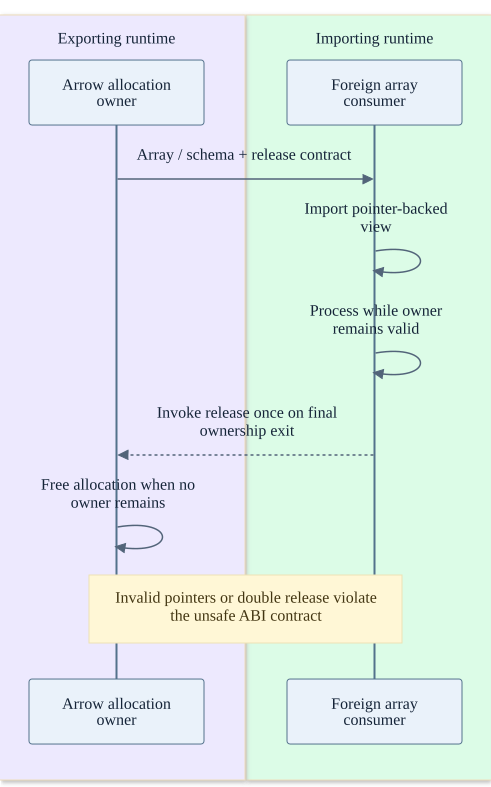

Chapter 15 · source-backed walkthrough
Rust and Arrow: ownership, async work and failure
Rust is the implementation language for the native query components in this guide. Arrow defines columnar in-memory representations. Ownership, asynchronous streams and batch processing explain local safety and speed; durable logs, fencing and recovery protocols explain distributed correctness.
01
What lives in a Rust process?
A host runtime schedules asynchronous work. DataFusion plans use Arc for shared ownership, Send / Sync constraints for cross-thread use, and Pin-based stream interfaces for polling. A Future that yields Pending needs a wakeup before useful progress; blocking CPU or synchronous I/O on an executor thread can delay unrelated tasks.
An Arrow RecordBatch combines a schema and arrays. Arrays refer to buffers, validity information and offsets where applicable. The inspected Buffer holds an Arc<Bytes>, pointer and length. Cloning / slicing can share the allocation while changing a view. That saves copies but keeps the backing allocation alive until all owners release it.
A tiny retained slice can therefore pin a much larger buffer. Shared immutable ownership is not a memory cap. MemoryReservation and application-level admission control still matter. Reference counting also has CPU cost, especially when many threads contend on shared ownership.
Batch views share one backing allocation
The ownership graph is local to a process. Reference sharing is not durable replication.

A Parquet read becomes columnar execution
Parquet is an on-disk format. Arrow is an in-memory layout. Reading compressed Parquet requires decoding even when later Arrow sharing avoids copies.

02
FFI and cancellation boundaries
The Arrow C Data Interface shares array / schema descriptions and release callbacks across an ABI. Importing foreign pointers is unsafe because Rust cannot prove their validity, type layout or lifetime. The importer must honor the ownership contract; a release callback must not run twice or run while another consumer still uses the memory.
Comet adds another boundary: JVM task lifecycle and Rust execution state. A native handle must be released when a Spark task closes, fails or stops reading early. The lifecycle tests inspect that resource release. Panics caught and converted at supported boundaries differ from abort, segmentation fault or process kill, where cleanup is not guaranteed.
Dropping a DataFusion execution stream is designed to abort execution and release resources. This is local cancellation. It does not roll back a remote database call that completed before cancellation. Remote effects need their own transaction or idempotency protocol.
Foreign-memory ownership must remain explicit
Conceptual Arrow ABI lifecycle. The actual release callback is supplied by the exporting allocation owner.

03
Concurrency is different from distributed fault tolerance
Send permits transfer of ownership across threads for a type that meets the contract. Sync permits shared references across threads under its contract. Neither proves the business operation is atomic, durable or idempotent. Arc keeps local memory alive; it does not replicate it to another host.
An async channel can bound local backlog and provide backpressure. It loses queued messages when the process dies unless the application also writes a durable log. Tokio task cancellation and Drop can clean local resources under normal unwinding / dropping, but neither substitutes for recovering from machine loss.
A high-throughput Rust service still needs overload policy, admission control, retry budgets and stable request identity. Spawning unbounded work can move the queue from sockets into memory. Blocking compute needs a deliberate execution pool or CPU scheduling strategy so asynchronous I/O tasks keep making progress.
| Primitive | Provides | Does not provide |
|---|---|---|
| Ownership / borrow checking | Compile-time restrictions on invalid reference use in safe code | Remote consistency or data durability. |
| Arc and immutable Arrow buffers | Shared local lifetime and cheap views | Persistent storage or a complete memory budget. |
| Send / Sync | Type constraints for cross-thread access | Exactly-once business effects or absence of logical races. |
| Future / Stream / Pending | Cooperative asynchronous progress | Automatic distributed scheduling or checkpointing. |
| Result and panic boundary handling | Explicit local error propagation when correctly handled | Recovery after process abort or guaranteed external rollback. |
| Memory reservation / spill | Resource control for participating operators | Protection from every untracked native allocation. |
Inside the implementation
These excerpts come directly from the code paths used above. Expand a component to move from the system view into its implementation.
arrow-buffer immutable.rs:83
Buffer shares its backing Bytes allocation with Arc.
arrow-rs/arrow-buffer/src/buffer/immutable.rs · 8208506f8f9e
82 #[derive(Clone, Debug)]
83 pub struct Buffer {
84 /// the internal byte buffer.
85 data: Arc<Bytes>,
86
87 /// Pointer into `data` valid
88 ///
89 /// We store a pointer instead of an offset to avoid pointer arithmetic
90 /// which causes LLVM to fail to vectorise code correctly
91 ptr: *const u8,
92
93 /// Byte length of the buffer.
94 ///
95 /// Must be less than or equal to `data.len()`
96 length: usize,arrow-slice immutable.rs:263
Slice shares storage and changes the view rather than copying every value.
arrow-rs/arrow-buffer/src/buffer/immutable.rs · 8208506f8f9e
262 /// Panics iff `offset` is larger than `len`.
263 pub fn slice(&self, offset: usize) -> Self {
264 let mut s = self.clone();
265 s.advance(offset);
266 s
267 }
268
269 /// Increases the offset of this buffer by `offset`
270 ///
271 /// # Panics
272 ///
273 /// Panics iff `offset` is larger than `len`.
274 #[inline]
275 pub fn advance(&mut self, offset: usize) {
276 assert!(parquet-stream mod.rs:714
Async Parquet reader builds a stream of decoded Arrow batches.
arrow-rs/parquet/src/arrow/async_reader/mod.rs · 8208506f8f9e
713 /// See examples on [`ParquetRecordBatchStreamBuilder::new`]
714 pub fn build(self) -> Result<ParquetRecordBatchStream<T>> {
715 let Self {
716 input,
717 metadata,
718 schema,
719 fields,
720 batch_size,
721 row_group_plan,
722 projection,
723 filter,
724 row_selection_policy: selection_strategy,
725 limit,
726 offset,
727 metrics,df-execute execution_plan.rs:402
Execution returns one partition as an asynchronous RecordBatch stream.
datafusion/datafusion/physical-plan/src/execution_plan.rs · 4a5d58006e62
401 /// # }
402 /// # fn execute(
403 /// # &self,
404 /// # _partition: usize,
405 /// # _context: Arc<TaskContext>,
406 /// # ) -> Result<SendableRecordBatchStream> {
407 /// # unimplemented!()
408 /// # }
409 /// fn replace_children(
410 /// self: Arc<Self>,
411 /// mut children: Vec<Arc<dyn ExecutionPlan>>,
412 /// _options: ReplaceChildrenOptions,
413 /// ) -> Result<Arc<dyn ExecutionPlan>> {
414 /// Ok(Arc::new(MyExec {
415 /// input: children.swap_remove(0),arrow-ffi ffi.rs:248
FFI imports require valid schema, pointers and allocation ownership.
arrow-rs/arrow-array/src/ffi.rs · 8208506f8f9e
247 /// This struct assumes that the incoming data agrees with the C data interface.
248 pub unsafe fn from_ffi(array: FFI_ArrowArray, schema: &FFI_ArrowSchema) -> Result<ArrayData> {
249 let dt = DataType::try_from(schema)?;
250 let array = Arc::new(array);
251 let tmp = ImportedArrowArray {
252 array: &array,
253 data_type: dt,
254 owner: &array,
255 };
256 // `consume` aligns under-aligned buffers before validating them.
257 tmp.consume()
258 }
259
260 /// Import [ArrayData] from the C Data Interface
261 ///comet-close CometExecIterator.scala:312
Task lifecycle closes batches, iterators and the native plan.
datafusion-comet/spark/src/main/scala/org/apache/comet/CometExecIterator.scala · 1628c520096e
311
312 def close(): Unit = synchronized {
313 if (!closed) {
314 closed = true
315
316 // Attempt every resource's cleanup independently, so that one failure does not skip the
317 // remaining resources: this close() is the only chance to release them, since `closed` is
318 // already set and the task-completion retry is a no-op. The first failure is rethrown with
319 // any later ones attached as suppressed exceptions.
320 var failure: Throwable = null
321 def attempt(cleanup: => Unit): Unit = {
322 try {
323 cleanup
324 } catch {
325 case t: Throwable =>df-memory mod.rs:478
Tracked operators reserve memory; operator-specific spill or failure follows refusal.
datafusion/datafusion/execution/src/memory_pool/mod.rs · 4a5d58006e62
477 /// in the pool.
478 pub fn try_grow(&self, capacity: usize) -> Result<()> {
479 self.registration.pool.try_grow(self, capacity)?;
480 self.size.fetch_add(capacity, atomic::Ordering::Relaxed);
481 Ok(())
482 }
483
484 /// Splits off `capacity` bytes from this [`MemoryReservation`]
485 /// into a new [`MemoryReservation`] with the same
486 /// [`MemoryConsumer`].
487 ///
488 /// This can be useful to free part of this reservation with RAAI
489 /// style dropping
490 ///
491 /// # Panicscomet-jni jni_api.rs:1242
Native execution uses a DataFusion plan inside the Spark executor process.
datafusion-comet/native/core/src/execution/jni_api.rs · 1628c520096e
1241 // so we should always execute partition 0.
1242 let stream = root_op.native_plan.execute(0, task_ctx)?;
1243
1244 if exec_context.scans.is_empty() && exec_context.shuffle_scans.is_empty() {
1245 // No JVM data sources — spawn onto tokio so the executor
1246 // thread parks in blocking_recv instead of busy-polling.
1247 exec_context.batch_producer =
1248 Some(BatchProducer::spawn(&get_runtime(), stream));
1249 } else {
1250 exec_context.stream = Some(stream);
1251 }
1252 exec_context.root_op = Some(root_op);
1253 } else {
1254 // Pull input batches
1255 pull_input_batches(exec_context)?;